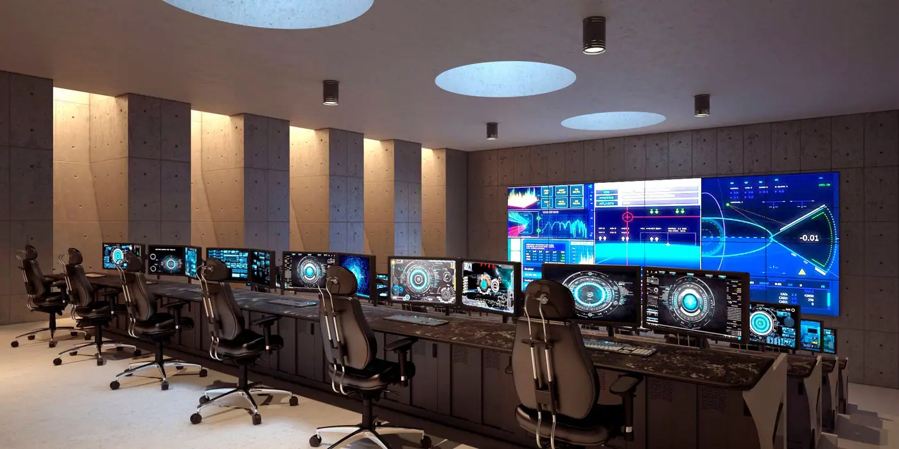
Savunma Sanayi, AR-GE, Tasarım, Mühendislik
Havacılık, Askeri, Telekomünikasyon, Savunma, İnşaat ve Otomotiv sektörlerinin ihtiyacı olan ürünler ve mekanik parçaların tasarımını ve üretimini yapıyoruz.
- 1800 m²Kapalı üretim alanı
- 2022Kuruluş, Ankara Ostim OSB
- 12 kWLazer kesim gücü
- ISO 9001Kalite belgesi
- Havacılık
- Askeri
- Telekomünikasyon
- Savunma
- İnşaat
- Otomotiv
Biz Kimiz?
Space Dynamics, 2022’de Ankara’da kuruldu. AR-GE, tasarım, mühendislik, savunma, metal işleme ve fotokimyasal işleme alanlarında faaliyet gösteriyoruz. Ana odak noktamız uzay ve hava araçları için iç parça üretimi, tasarımı ve AR-GE süreçlerini yönetmek. İlkelerimiz: Güvenilirlik, kalite, teknik destek, müşteri memnuniyeti, yenilikçilik, sosyal sorumluluk ve etik değerlere bağlılık. Size özel çözümlerle buradayız.
- Güvenilirlik
- Üretim Sonrası Teknik Destek
- Müşteri Memnuniyeti
- Sosyal Sorumluluk ve Etik Değerlere Bağlılık
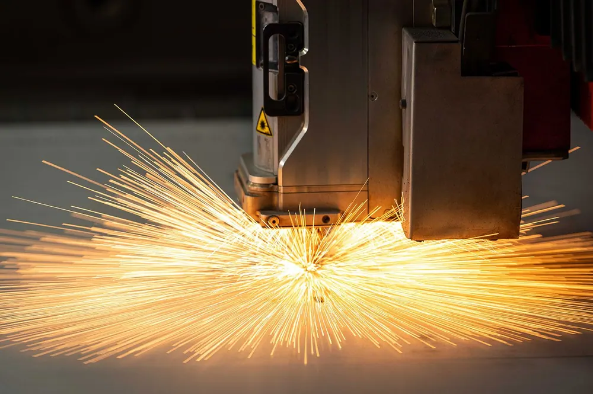
Neler Yapıyoruz?
Endüstriyel kabinlerden komuta merkezi konsollarına, lazer kesimden kaynaklı imalata kadar tasarım ve üretimi tek çatı altında yürütüyoruz.
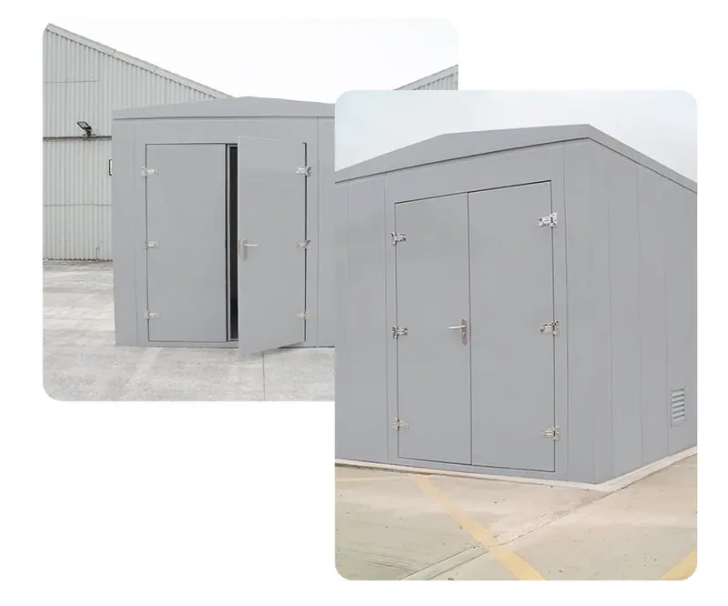
Endüstriyel Kabinler
Endüstriyel metal cihaz kabinleri ve metal cihaz kutuları, endüstriyel ortamlarda elektronik ve elektrikli cihazların korunması, depolanması ve düzenlenmesi için kullanılan özel tasarımlı kabinlerdir.
Detaylar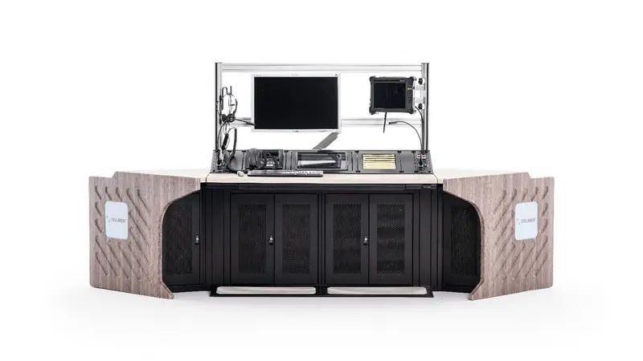
Kontrol Odası & Komuta Merkezi
Space Dynamics, çoğu sektördeki kontrol odaları ve kontrol merkezleri için yüksek kalite standartlarını karşılayan konsollar tasarlayıp üretmektedir.
Detaylar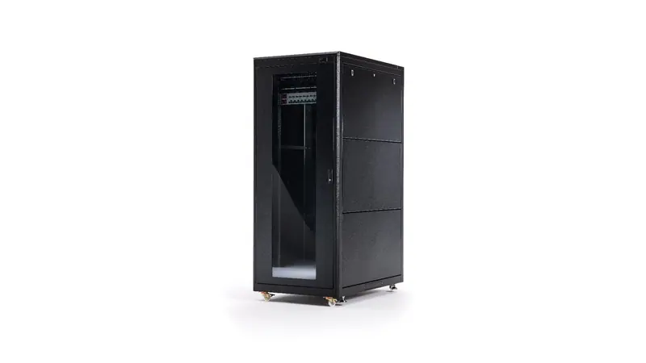
19” Rack Kabinler
Space Dynamics, evrensel standartta rack kabinet üretiminde uzmanlaşmış, Türkiye’nin önde gelen firmalarından biri olup, Türkiye’de en yüksek standartta rack kabinetler üretmektedir.
Detaylar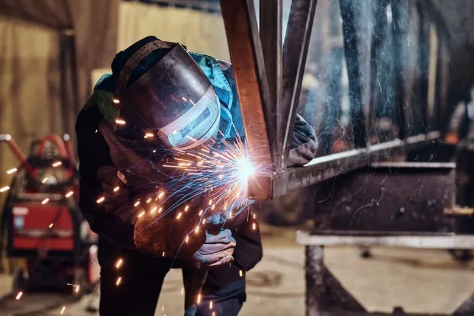
Kaynaklı İmalat
Mekanik ve kaynaklı imalatın bir arada çalıştığı makine mühendisliği, proje bazlı imalat, seri üretim gibi çoğu alanda müşterilerine çok hızlı ve kaliteli hizmet sunmaktadır.
Detaylar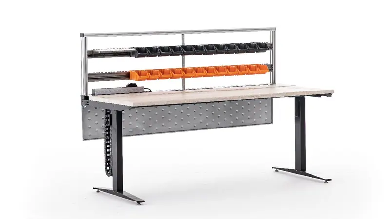
Teknik Masalar
Hareketli masalar hem ayakta hem de oturarak çalışmayı destekleyerek enerjinizi ve verimliliğinizi artırır, size daha aktif ve sağlıklı bir çalışma alanı sunar.
Detaylar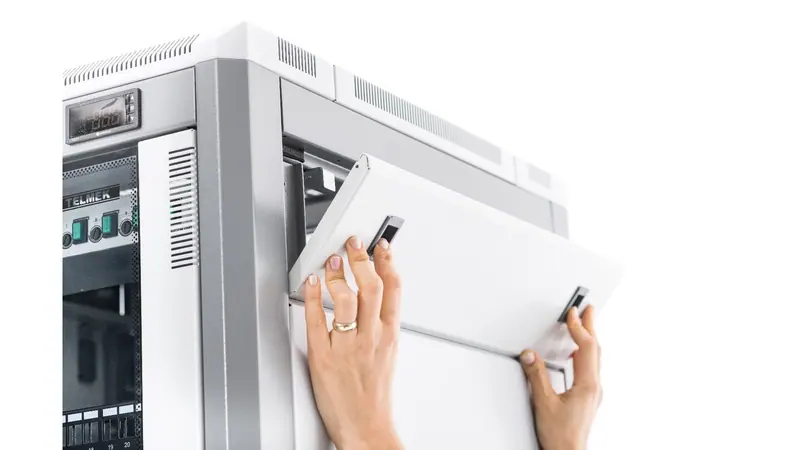
Rack Kabin Aksesuarları
Rack kabin aksesuarları geniş bir ürün yelpazesine sahiptir. Fan grubu, raflar, klavye kutusu, güç dağıtım grubu, priz grubu ve diğer ürünlerle müşteri beklentileri karşılanmaktadır.
Detaylar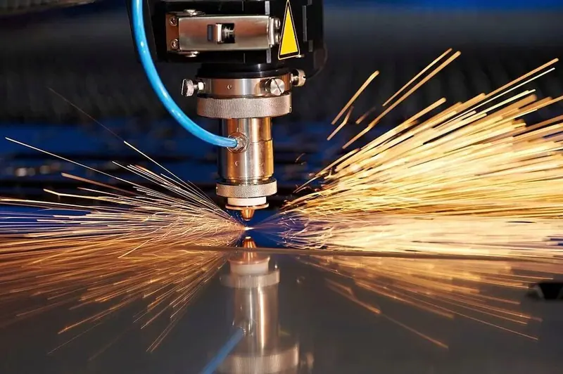
Lazer Kesim
Lazer ışını malzemenin yüzeyine çarpar ve kuvvetli bir şekilde ısınarak malzemenin erimesine veya tamamen buharlaşmasına neden olur.
Detaylar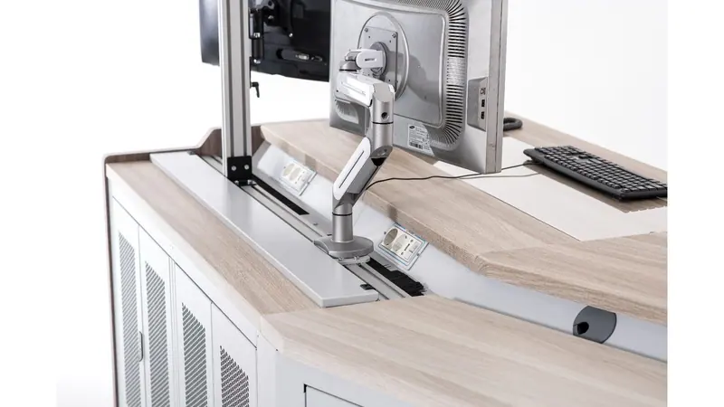
Konsol Aksesuarları
Ergonomik konsol sistemleri, çoklu ekran tutucuları vasıtası ile kullanıcıya tam bir görüş alanı sağlar.
DetaylarSpace Dynamics Çalışma Prensibimiz
Müşteri Memnuniyeti
Müşterilerimize en iyi hizmeti sunarak, ihtiyaçlarını en üst düzeyde karşılamak için çaba harcarız.
Yenilikçilik
İleri teknoloji ve modern üretim hattıyla donatılmıştır. Bu sayede müşterilerimize en yenilikçi çözümleri sunarız.
Güvenilirlik
Space Dynamics, Türkiye'nin farklı bölgelerinde ve yurtdışında birçok projeyi başarıyla yürütmenin güvencesini sunar.
Kaliteli Ürün
Ar-Ge, tasarım ve üretim yaparak ürünler sunarız. Müşterilerimize üstün kalitede ürünler sağlama kararlılığımızı sürdürürüz.
Space Dynamics Neden Güvenilir?
Ankara Ostim Sanayi Bölgesi’nde 1800m² kapalı alan üzerinde, ileri teknoloji ve modern üretim hattıyla faaliyetlerini yürütmektedir.
Dünyada ve Türkiye’nin farklı bölgelerinde bulunan, farklı sektörlerde birçok kurum ve kuruluşa ait projeyi kaliteli ve üstün başarı ile sürdürmektedir.
Yurtdışında da yeni bağlantılar kurarak farklı projelere imza atan şirketimiz, yurtdışı pazarlarda da çalışmalarını başarı ile devam ettirmektedir.
Savunma sanayi sektörü için Ar-Ge, tasarım ve üretim yapmaktadır.
Öğrencilere, Girişimcilere ücretsiz destekler sağlayarak sosyal sorumluluğunu büyümesiyle artırmayı planlamaktadır.

Bizimle Çalışan Kurumlar
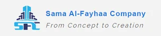
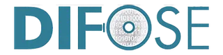
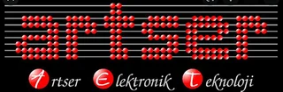
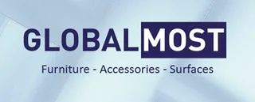
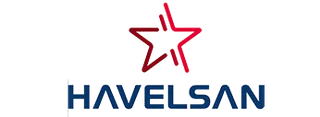
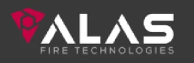
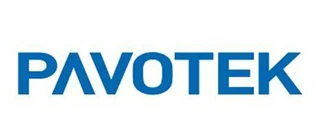
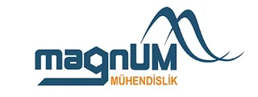
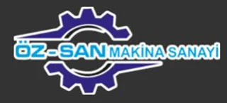
Daha Fazla Bilgi ve Teklif Almak İçin
Projenizi anlatın, size özel çözümle dönüş yapalım.